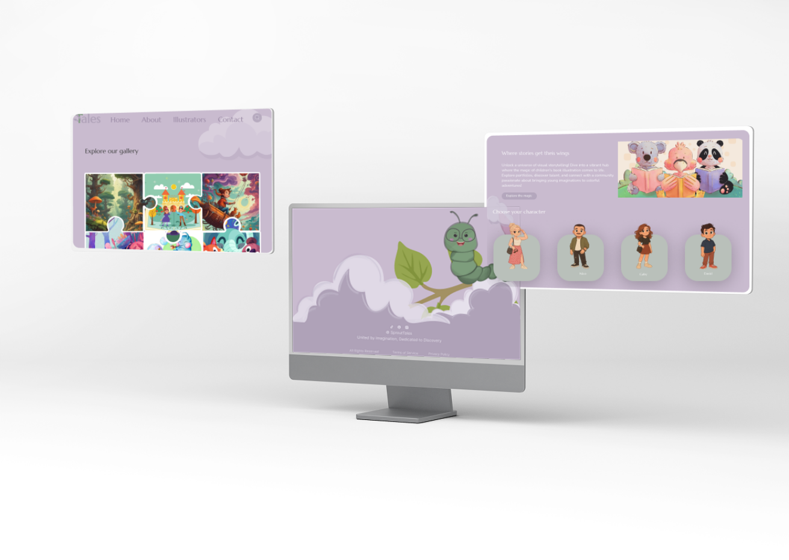

Sprout Tales - Online hub dedicated to the art of children’s book illustration. Sprout Tales is a platform that serves as showcase for talented illustrators to display their work and community space where illustrators and authors can connect and collaborate.
 Click to view moreWireframes